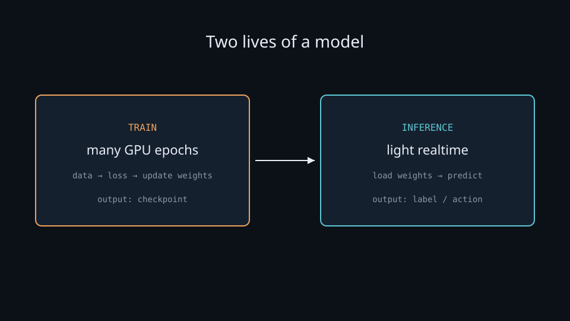
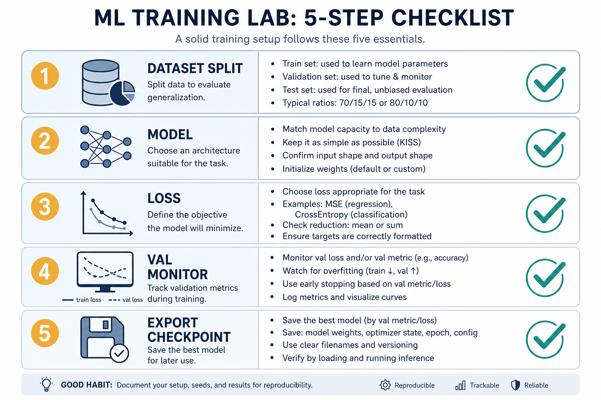

Train vs Infer · two lives of a model
Every model lives two lives: learning (heavy, once) and using (light, forever). Years at school vs answering one exam question.
“AI” is not one block
Expect demos to learn
Static HTML demos do not “learn” from clicks — they only run forward passes.
Rent a GPU per click
Inference is a light forward pass; training is the expensive many-epoch loop.
Lab demos are all inference. Real training happens in notebooks / cloud GPU, then weights plug into the UI.
Two phases
| Phase | Work | Needs | Cost | Output |
|---|---|---|---|---|
| Train | many epochs; compare to label; update weights | labels · optimizer · backward() | heavy · GPU | checkpoint |
| Inference | load weights; feed input; predict | frozen weights · forward only | light · realtime | label / action |
Fine-tune is still training. “Chat without updating weights” is inference.
Key ideas
Reducing error
Predict → loss (CE + softmax) → SGD/Adam on gradients. One epoch = one pass; many until val plateaus.
Checkpoint is the product
.pt / SavedModel / ONNX / Hub folder — transferable artifact between notebook and demo.
Eval mode
model.eval() + no_grad() — disable dropout, freeze BN. Training mode at serve = flickering outputs.
Two panels · train vs infer

Same architecture — completely different cost profile and lifecycle. Train VRAM ≫ serve VRAM.
Two lives of a model

Data → train (many GPU epochs) → checkpoint → load → infer (predict). Quantization / distillation package a finished model — they don’t replace the train/val loop.
Training curves vs inference product

Track val_loss / val_f1 every epoch; save when improved. Report metrics from the chosen checkpoint — not a cherry-picked mid-run print.
Worked example · car-nn + sentiment
Notebook weeks
Sensors → action pairs. Forward → loss → backward. Keep best val as weights.json.
Static assets
No training data ships with the demo. Cost already paid once.
Browser click
One forward pass → action / argmax(softmax(logits)). Never an optimizer.
Random predictions after deploy? Check eval() / wrong checkpoint — not “needs more clicks to learn.”
At inference time
model.eval()
Dropout off · BN uses running stats. Same input → same output.
torch.no_grad()
No gradient graph — faster, less memory. Don’t accidentally build one.
Same preprocess
Same tokenizer, label map, class order train↔infer. Mismatched order silently swaps preds.
Deeper dive · memory, mode, budgets
What each phase allocates
Train: activations for backward + Adam (~2× params) + loaders. Infer: weights + one-batch activations.
train() vs eval()
Not optional. Forgetting eval() → users blame “the model,” but it is mode.
Checkpoint policy
Save on val improve; optionally keep top-3. Never ship last epoch by default.
Quantize / distill
Inference-side shrink/speed after training. Package — don’t replace — a good train/val loop.
Online learning ≠ demos
Live weight updates need labels, monitoring, rollback. Lab demos do not do this.
Two optimizers
Train optimizes quality; serve optimizes p95 + cost. +0.5% that triples serve cost may be wrong for product.
Decision guide
| Situation | Prefer | Avoid / why |
|---|---|---|
| User-facing click / API predict | Load checkpoint, eval(), forward only | Epochs or loss.backward() in the request path |
| Need better accuracy on your labels | Fine-tune on GPU, then re-export | Hoping prompt tricks replace labeled training for classifiers |
| Demo must run in static HTML | Small frozen weights + JS/ONNX forward | Expecting the page to “learn” from clicks |
| Predictions flicker with same input | Force model.eval() + deterministic seed | Leaving dropout active at serve |
| Choosing which file to ship | Best validation checkpoint | Last epoch by default — often overfit |
| Cost spike on every prediction | Distill / quantize / smaller serve model | Renting train-class GPUs for light forwards |
Case Study
Car-nn and sentiment demos both follow the same two-life pattern.
Inputs (train)
labeled sensor→action pairs or review→sentiment labels; GPU notebook; val split for checkpoint selection.
Steps
many epochs of forward→loss→backward→step → keep best-val weights → export to static demo assets → UI path loads weights once, runs eval()/no_grad forward per click.
Output
users feel realtime inference; you paid GPU hours once. Sentiment clicks are argmax(softmax(logits)) only — never an optimizer.
Verify
dropout off at serve; label-map order matches training; demo cannot “learn” from clicks; if outputs flicker on identical input, suspect train mode left on.
Lab Checklist
Draw the train vs infer table (work, cost, output) from memory
Train a tiny model for ≥2 epochs and save a checkpoint file
Reload weights in a fresh process with eval() + no_grad
Feed the same input twice and confirm deterministic outputs (dropout off)
Compare metrics of last-epoch vs best-val checkpoint
List three artifacts that must match between train and serve (tokenizer, labels, preprocess)
Explain in one sentence why a browser demo should not run loss.backward()
Optional: note one serve optimization (quantize/distill/smaller model) that does not replace training
Lab checklist — train once, serve many

Easy to go wrong
Fine-tune ≠ inference
Fine-tune still updates weights — it is training, not serve-time prediction.
Dropout left on
Noisy, inconsistent predictions at serve time.
Ship last epoch blindly
Prefer best validation checkpoint.
Train from scratch always
Hub model + light fine-tune often beats reinventing training.
From data to prediction
In AI Lab: protonx / Kaggle / Colab notebooks → export → embed in UI. See train-gpu.md for the stack.
Where to go next
train-gpu
PyTorch, TF, HF, Kaggle, Colab checklist.
pytorch-training
Write the epoch loop by hand.
car-nn / sentiment
See inference-only demos in the browser.
Train once.
Infer forever.
notes/06-train-infer.md — then train-gpu for the practical stack.
Open note →